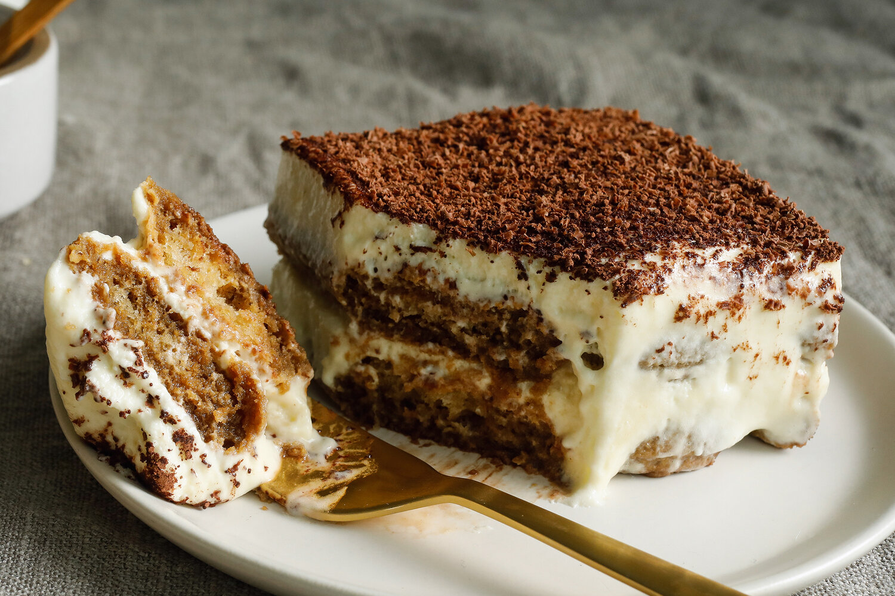

Tiramisu

Description
Tiramisu is a classic Italian layered dessert with rum-flavored, coffee-soaked ladyfingers,
a creamy mascarpone custard, and whipped cream.
This tiramisu recipe is easy to make at home for an impressive no-bake dessert.
Ingredients
- 6 large egg yolks
- 3/4 cup white sugar
- 2/3 cup milk
- 1 1/4 cups heavy cream
- 1/2 teaspoon vanilla extract
- 1 pound mascarpone cheese, at room temperature
- 1/4 cup strong brewed coffee, at room temperature
- 2 tablespoons rum
- 2 packages ladyfinger cookies
- 1 tablespoon unsweetened cocoa powder
Steps
- Whisk together egg yolks and sugar in a medium saucepan until well blended.
- Whisk in milk and cook over medium heat, stirring constantly, until mixture comes to a boil.
- Boil gently for 1 minute, then remove from the heat and allow to cool slightly.
- Cover tightly and chill in the refrigerator for 1 hour.
- Beat cream and vanilla in a medium bowl with an electric mixer until stiff peaks form.
- Remove egg yolk mixture from the refrigerator; add mascarpone cheese and whisk until smooth.
- Combine coffee and rum in a small bowl.
Split ladyfingers in half lengthwise and drizzle with the coffee mixture.
Arrange 1/2 of the soaked ladyfingers in the bottom of a 7x11-inch dish.
- Spread 1/2 of the mascarpone mixture over the ladyfingers,
then spread 1/2 of the whipped cream over top. Repeat layers once more.
- Sprinkle cocoa powder over top.
- Cover and refrigerate until set, 4 to 6 hours.
- Enjoy!